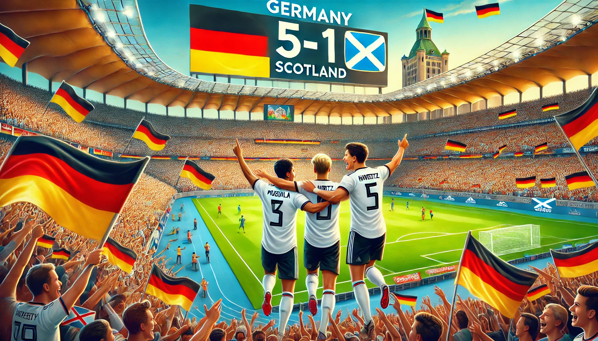
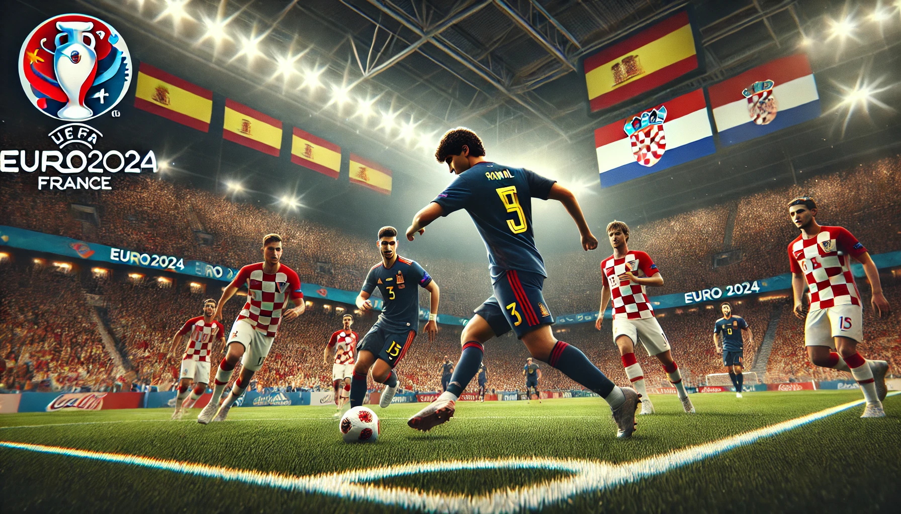

Euros 2024 Matchweek 1 Standout Performances, Latest News, and Updates
Germany's Dominance
Germany opened the tournament in spectacular fashion with a 5-1 victory over Scotland in Munich. Questions about the team's form were answered emphatically as the youthful trio of Jamal Musiala, Florian Wirtz, and Kai Havertz orchestrated a dominant performance. Their fluid attacking play and clinical finishing showcased Germany's potential to go deep into the tournament.
Germany's attacking prowess was evident from the first whistle. Musiala, playing with remarkable maturity, frequently found space behind the Scottish defense. Wirtz and Havertz's interplay in the final third created numerous opportunities, culminating in a flurry of goals that left the Scots reeling. This performance has certainly set a high bar for the hosts, who are now viewed as one of the favorites to win the tournament.
Young Stars Shine
The first week also saw the emergence of new talents on the international stage. Lamine Yamal of Spain, at just 16 years old, became the youngest player to provide an assist in Euros history during Spain's 3-0 victory over Croatia. Additionally, Turkey's Arda Guler and Portugal's Francisco Conceicao scored on their tournament debuts, highlighting the arrival of a new generation of football stars.
Yamal's assist was a moment of brilliance, showcasing his vision and technical skill. He threaded a perfect pass through the Croatian defense, setting up Alvaro Morata for a clinical finish. Guler's goal for Turkey was equally impressive, as he dribbled past two defenders before slotting the ball into the bottom corner. Conceicao's goal came from a powerful strike outside the box, underscoring his potential to become a key player for Portugal in the coming years.
Struggles for England and France
England and France faced unexpected challenges in their opening matches. England managed a narrow 1-0 win over Serbia, thanks to contributions from Bukayo Saka and Jude Bellingham, but their overall performance raised concerns about their ability to maintain a fluid style of play. Similarly, France struggled to a 1-0 win over Austria, with their only goal coming from an own goal by Austria's Maximilian Wober. The French team's lack of clinical finishing was evident, and an injury to Kylian Mbappe added to their woes.
England's match against Serbia was a tough battle. Serbia's disciplined defense and physical style of play disrupted England's rhythm. While Saka and Bellingham showed flashes of brilliance, the team's inability to break down the Serbian defense consistently was worrying. France's situation was compounded by Mbappe's injury. Without their star forward, France struggled to convert their dominance in possession into goals. The French camp will be hoping for Mbappe's quick recovery as they face tougher challenges ahead.
Notable Matches and Upcoming Fixtures
Other notable results included Spain's narrow 1-0 win over Italy, highlighting a strong defensive effort from both teams. The game was a tactical battle, with both sides displaying disciplined defensive structures. Spain's winning goal came from a well-worked set-piece, demonstrating their ability to capitalize on limited opportunities.
As the tournament progresses, fans can look forward to more exciting clashes. England versus Slovenia and Germany against Switzerland are expected to be crucial in determining the group standings. England will need to find their attacking flair to secure a comfortable win, while Germany will aim to continue their dominant form against a resilient Swiss side.
Other Highlights from Matchweek 1
Portugal's opening match against Czechia saw Cristiano Ronaldo making a significant impact despite not scoring. His leadership and experience were vital in guiding a relatively young Portuguese side to a 2-1 victory. The match also marked the emergence of Francisco Conceicao, who scored a stunning goal and earned the Man of the Match award.
Meanwhile, Belgium suffered a surprising 0-1 defeat to Slovakia. The Belgian side, despite their star-studded lineup, failed to break down a well-organized Slovak defense. This result has put pressure on Belgium to perform in their upcoming matches to secure a place in the knockout stages.
Best Euro Yet?
Euro 2024 has already provided plenty of drama and excitement, and with the group stage continuing, the tournament promises even more captivating football as teams vie for a place in the knockout stages. The emergence of young stars, the tactical battles between top teams, and the unexpected results have set the stage for a memorable tournament. As we move forward, the intensity is only expected to increase, keeping fans on the edge of their seats.
Stay tuned for more updates as the tournament progresses. With each matchday bringing new surprises and standout performances, Euro 2024 is shaping up to be one of the most exciting editions of the European Championship in recent memory.